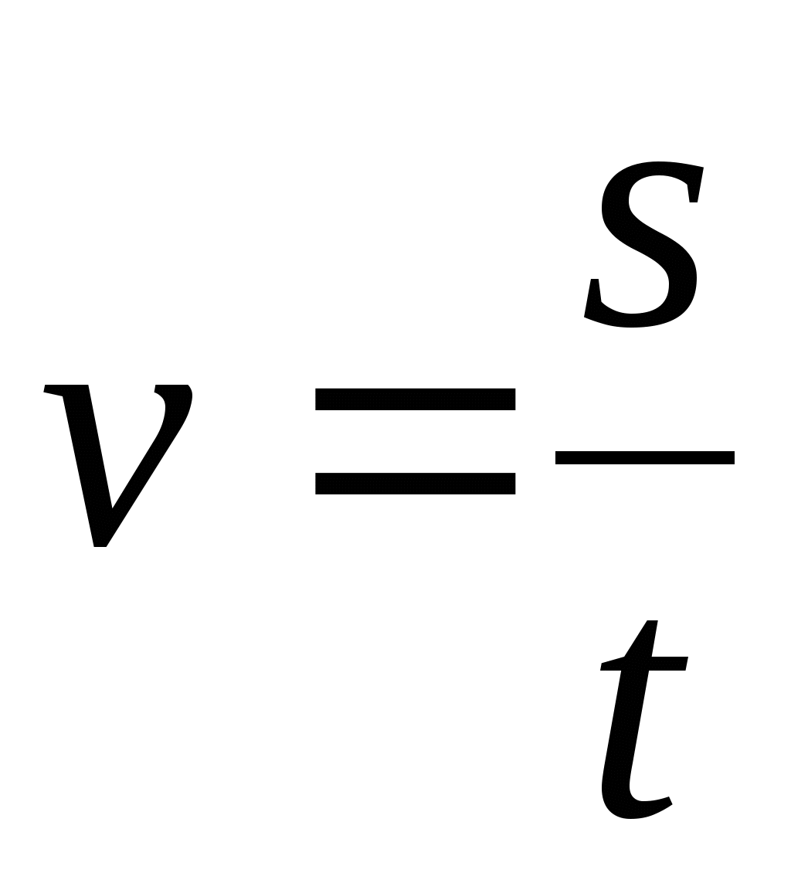
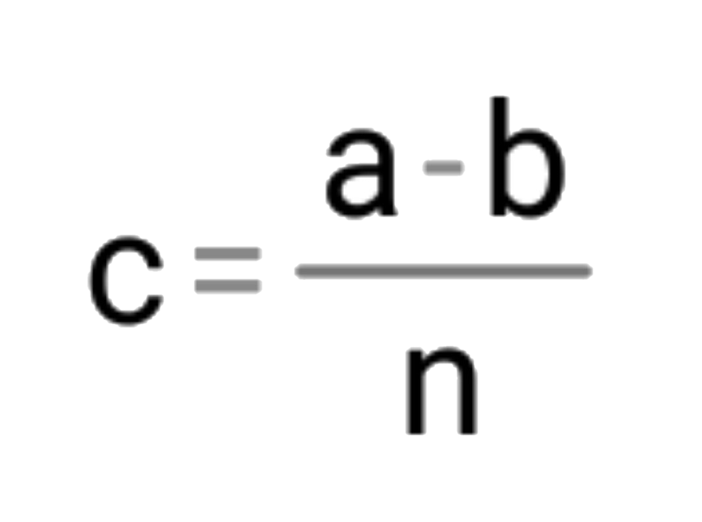

Физика – (от др.-греч. φύσις — природа) это наука о природе, которая изучает материю (вещество и поле), общие формы движения материи, а также фундаментальные взаимодействия природы, управляющие движением материи.
Материя есть объективная реальность, существующая помимо нашего сознания и данная нам в ощущении.
Материя существует в двух видах: вещества и поля
Вещество – вид материи, состоящей из совокупности атомов, молекул, их соединений и обладающих массой покоя.
Примеры. Вещество: дерево, железо, стекло, вода, воздух и др.
Поле - особая форма материи, посредством которой происходит взаимодействие между частицами вещества.
Поля: гравитационное, электрическое, магнитное, электромагнитное.
Материя находится в вечном движении и мерой движения материи является энергия.
Закон сохранения материи: материя ниоткуда не берётся, никуда не исчезает, а только видоизменяется.
Термин «физика» впервые появился в сочинениях одного из величайших мыслителей древности — Аристотеля, жившего в IV веке до нашей эры. Несмотря на ряд неправильных утверждений, физика Аристотеля на протяжении веков оставалась основой знаний о природе.
В русский язык слово «физика» было введено М. В. Ломоносовым, издавшим первый в России учебник физики — свой перевод с немецкого языка учебника «Вольфианская экспериментальная физика» Х. Вольфа (1746). Первым оригинальным учебником физики на русском языке стал курс «Краткое начертание физики» (1810), написанный П. И. Страховым.
В основе физических исследований лежат наблюдения.
Наблюдение – это изучение явлений природы без вмешательства в их ход.
Изучение явления природы в специально созданных условиях называется опытом.
После наблюдения и проведения опытов формируется гипотеза.
Гипотеза - предсказанное утверждение, предположение или догадка. Гипотеза высказывается на основе ряда подтверждающих её наблюдений.
Гипотезы проверяются с помощью продуманного эксперимента, в котором явление проявлялось бы в как можно более чистом виде и не осложнялось бы другими явлениями. Основная задача эксперимента заключается в проверке гипотез и выводов теории, имеющих фундаментальное и прикладное значение. Анализ данных совокупности экспериментов позволяет сформулировать закономерность.
На основе полученных закономерностей при помощи законов физики дается объяснение явлени. Формируется конечный продукт - теория.
Теория – система знаний, обладающая предсказательной силой в отношении какого-либо явления. Теории формулируются, разрабатываются и проверяются в соответствии с научным методом.
Закон - вербальное или математически сформулированное утверждение, которое описывает соотношения, связи между различными научными понятиями.
Физика — количественная наука. Физический эксперимент опирается на измерения, то есть сравнение характеристик исследуемых явлений с определенными эталонами. С этой целью физика развила совокупность физических единиц и измерительных приборов.
Измерение – это определение количественных значений (характеристик) изучаемых сторон или свойств объекта с помощью специальных технических устройств.
Всё, что можно измерить, называется величиной.
Измерить какую-нибудь величину - значит сравнить ее с однородной величиной, принятой за единицу
Все физические величины с их основными единицами измерения составляют Международную систему единиц СИ, которая состоит из основных и производных величин.
Основные: длина, масса, время, температура, сила тока, сила света, молярная масса.
Производными величинами являются все остальные; например: площадь, скорость, сила, давление и т.д.
Единица измерения производной величины выражается через основные.
Например. Скорость  м/с
Измерение бывает прямым и косвенным.
При прямом измерении значении физической величины определяется непосредственным сравнением с её единицей измерения.
При косвенном измерении значении величины определяется по формуле.
Цена деления шкалы — разность значений величины, соответствующих двум соседним отметкам шкалы.
Определение цены деления шкалы: Найти два ближайших штриха шкалы, возле которых написаны значения величин. Вычесть из большего значения меньшее. Полученное число разделить на число делений (промежутков), находящихся между ними.
, где
с - цена деления;
a и b - два ближайших штриха шкалы, возле которых написаны значения величин;
n - количество промежутков
В физике допускаемую при измерении неточность называют погрешностью измерений.
Чем меньше цена деления, тем больше точность измерения.
Погрешность измерений равна половине цены деления шкалы измерительного прибора.
При записи величин (с учётом погрешности) следует пользоваться формулой: A=a±Δa ,
где
A — измеряемая величина,
a — результат измерений,
Δa — погрешность измерений ( Δ — греческая буква «дельта»).